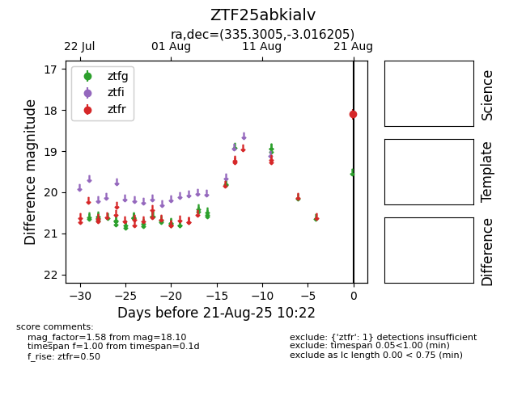

Target ZTF25abkialv at 2025-08-21 10:22, see:
FINK: fink-portal.org/ZTF25abkialv
Lasair: lasair-ztf.lsst.ac.uk/objects/ZTF25abkialv
ALeRCE: alerce.online/object/ZTF25abkialv
alt names
ZTF25abkialv (ztf,alerce)
coordinates:
equatorial (ra, dec) = (335.3005,-3.01621)
galactic (l, b) = (60.2282,-46.76354)
photometry
last ztfr=18.10
1 ztfr detections
